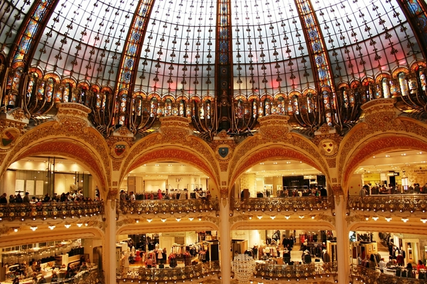

Paris, the city of Lights, the fashion capital, the city of Love. All these nicknames are far from enough to reveal all of Paris. Paris is one of the most beautiful cities in the world. It is known worldwide for the Louvre Museum, Notre-Dame cathedral, and the Eiffel tower. It has a reputation of being a romantic and cultural city. The city is also known for its high-quality gastronomy and the terraces of its cafés.
What makes Paris so attractive and charming is also its architecture. From modern buildings like the Louis Vuitton Foundation’s glass building to the majestic Haussmannian apartments, Paris is full of various architectural styles. Architecture lovers will always find a place to satisfy their passion, regardless of their favorite era or style.
Paris is a fashion capital. The city of Lights is also the place where high fashion and trends have been created for centuries.
Chanel, Saint Laurent, Vuitton, Dior, Hermès. These big names in the fashion world have all started in Paris.
It’s also where the Paris Fashion Week takes place, one of the most important days in the fashion world’s calendar.
Every fashionista knows it: Paris is a must for all shopping addicts.